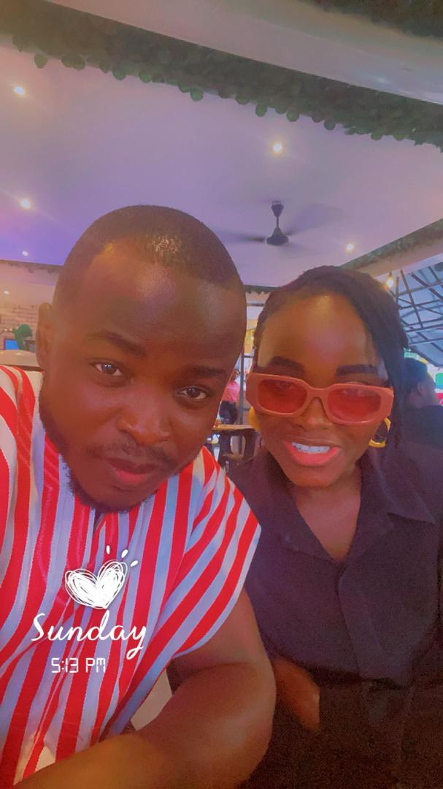

Saturday, 28th February 2026 • 11:00 AM

With dignity and joy,
A threefold cord is bound.With God and men to witness,
These sacred vows resound.
He vowed before Jehovah
To love her from the heart.“What God has yoked together,
Let no man put apart.”
2.They both have searched God’s Word
To learn to do his will,
And now they seek his blessing,
Their promise to fulfill.
She vowed before Jehovah
To love him from the heart.
“What God has yoked together,
Let no man put apart.”
Song 132 lyrics.
This is at last bone of my bone,
Flesh of my flesh; now I’m not alone.
God has provided a partner,
Someone to call my own.
Now we are one; now there can be
Blessings to share for you and for me.
As man and woman together,
We are a family.
Ev’ry day we’ll serve our God above.
As he shows the way,
Unfailing love we’ll display.
As we have vowed, so may it be.
Seasons of joy, may we come to see.
Oh, may we honor Jehovah,
And may you always be my love.